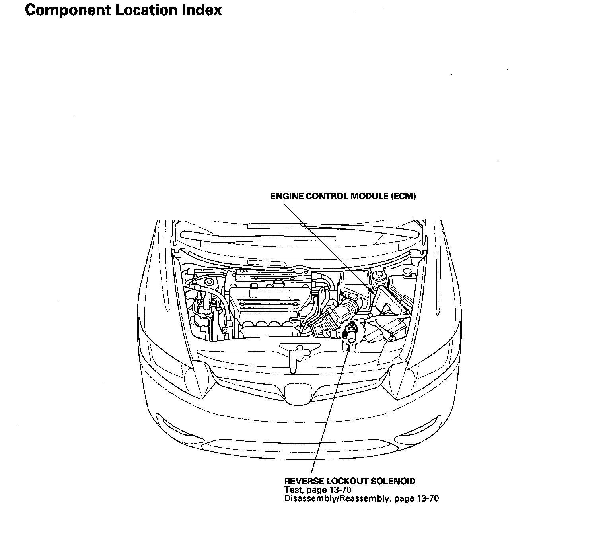

Operation CHARM
: Car repair manuals for everyone.
Home
>>
Honda
>>
2007
>>
Civic Si L4-2.0L
>>
Repair and Diagnosis
>>
Transmission and Drivetrain
>>
Transmission Control Systems
>>
Actuators and Solenoids - Transmission and Drivetrain
>>
Actuators and Solenoids - M/T
>>
Gear Lockout Solenoid
>>
Locations
>>
Reverse Lockout System Component Location Index
Reverse Lockout System Component Location Index
Reverse Lockout System Component Location Index:
